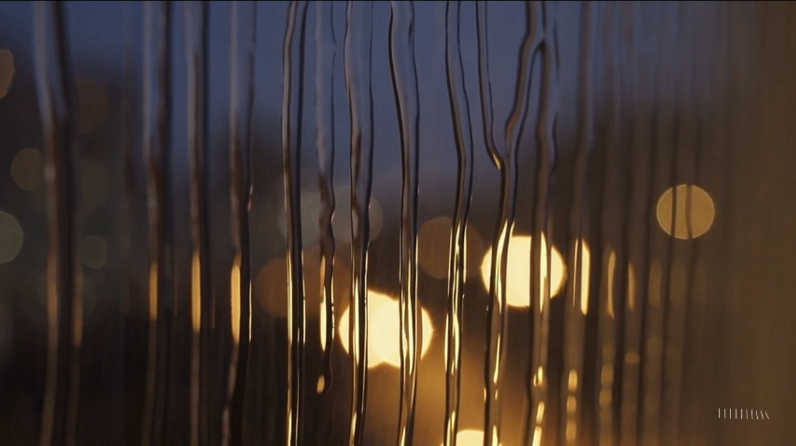

🔁 Loop 기능이란?
Loop는 **영상의 끝부분**과 **시작 부분**을 AI가 분석하여, 두 지점이 매끄럽게 연결되도록 만들어주는 기능입니다. 사용자가 지정한 구간이 시작과 끝의 구분 없이 계속해서 순환하는 것처럼 보이게 됩니다.
- 핵심: 영상의 특정 구간을 '무한 반복' 가능하게 만듦
- 장점: SNS, 웹디자인 등에서 활용도 높은 짧고 반복적인 영상(Cinemagraph, Animated GIF 등)을 손쉽게 제작
- 원리: 영상의 마지막 프레임과 첫 프레임이 자연스럽게 이어지도록 중간 과정을 미세하게 조정하거나 생성
🏃♂️ Loop 기능 연습 예제
미션: 끝없이 내리는 빗방울 장면 만들기
어떻게 특정 움직임이 끊김 없이 자연스럽게 반복되는지 직접 확인해 보세요.
[1단계] 기준 영상 생성하기
먼저, 루프를 적용할 원본 영상을 생성합니다. 이 영상은 재생이 끝나면 멈춥니다.
`Raindrops streaming down a window pane, with a blurry city view in the background, cozy atmosphere.`
[2단계 & 3단계] Loop 적용 및 최종 결과
생성된 영상에서 `Loop` 버튼을 클릭하고, 빗방울의 움직임이 가장 일정한 2~3초 구간을 선택합니다. Sora가 해당 구간의 시작과 끝을 자연스럽게 연결하여, 마치 비가 영원히 내리는 듯한 '무한 반복' 영상이 완성됩니다.
[결과 영상 예상: 끊김 없이 계속 비가 내리는 장면]
⚠️ 주의 사항 및 PRO-TIP
- 일관된 움직임을 가진 구간 선택: 가장 중요합니다. 피사체의 움직임이 시작과 끝에서 비슷한 구간을 선택해야 결과물이 자연스럽습니다. (예: 계속해서 흔들리는 나뭇잎, 잔잔하게 물결치는 수면)
- 급격한 변화가 있는 구간은 피하기: 카메라가 갑자기 움직이거나, 새로운 피사체가 등장하는 등 급격한 변화가 있는 구간은 루프를 만들기에 적합하지 않습니다.
- 짧게 시작하기: 처음 연습할 때는 1~2초 정도의 짧은 구간을 선택해서 연습해 보세요. 짧은 구간일수록 AI가 연결점을 찾기 쉽습니다.
- 의도를 명확히: 애초에 루프 영상을 만들 목적이라면, 프롬프트에 'a seamless loop of...' 와 같이 의도를 명확히 밝혀주면 더 좋은 결과물을 얻는 데 도움이 될 수 있습니다.